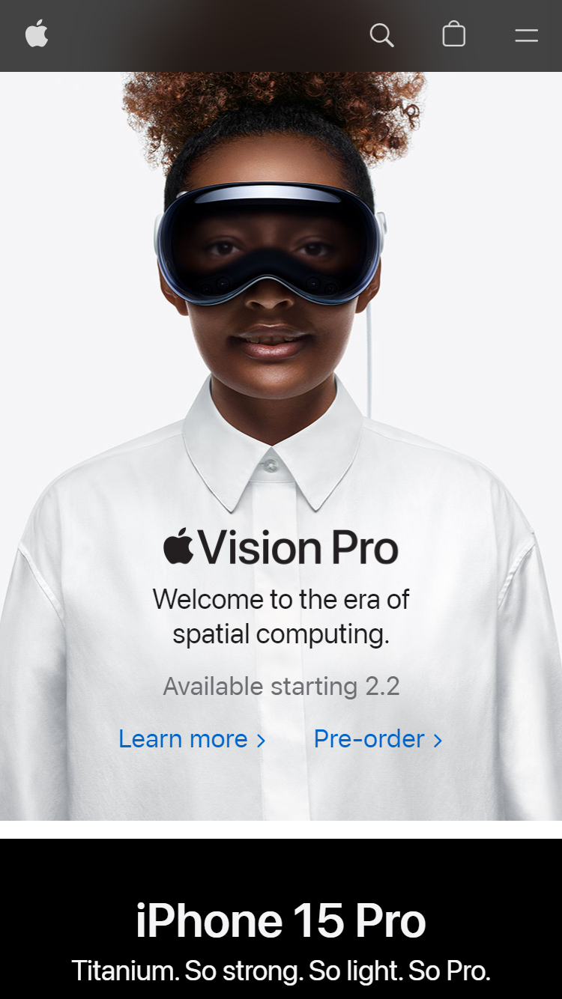
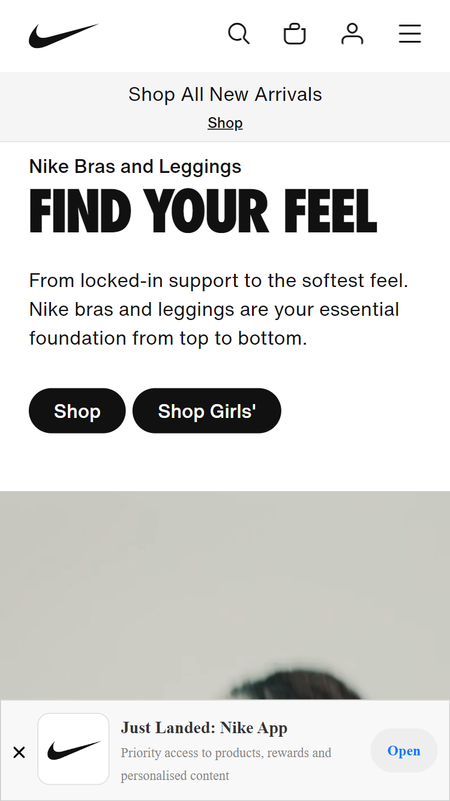

Visual Hierarchy
Apple
The Apple website is a notable example of effective visual hierarchy in web design, characterized by a clean and minimalist aesthetic, clear navigation, high contrast, consistent color palette, readable typography, and strategic use of whitespace. Large, high-quality imagery and responsive design contribute to a cohesive and engaging user experience, emphasizing key products and sections while maintaining simplicity and clarity.
Fitt's Law
Google's search page applies Fitt's Law by featuring a large and centrally positioned search bar, minimizing the time and effort required for users to initiate a search. The simple design and auto-suggestions further enhance usability by emphasizing the primary action of entering a search query.
White Space and Clean Design
Nike
The Nike website showcases a clean design through a minimalist layout, ample white space, simplified navigation, consistent branding, high-quality imagery, and clear typography